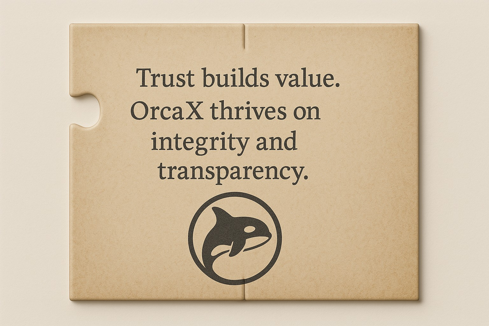

혼자가 아닌 함께이기에 우리는 멀리 간다.
바다는 누구에게나 위대하고 위협적인 공간입니다.
혼자 떠난 항해는 빠를 수는 있어도,
멀리 갈 수는 없습니다.
OrcaX는 혼자의 항해가 아닌, 모두의 항해입니다.
기술이 기반이지만,
그 토대를 굳건히 지탱하는 건 사람들 간의 연결, 공동체의 유대입니다.
함께 노를 저을 때,
한 사람이 지칠 때 옆에서 일으켜주는 이가 있을 때,
우리는 더 멀리, 더 오래, 더 깊은 곳으로 나아갈 수 있습니다.
